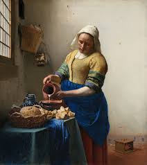

The Milkmaid
Johannes Vermees, 1658, Rijksmuseum in Amsterdam
he Milkmaid (Dutch: De Melkmeid or Het Melkmeisje), sometimes called The Kitchen Maid, is an oil-on-canvas painting of a "milkmaid", in fact, a domestic kitchen maid.
Lady with an Ermine

Leonardo Da Vinci, 1490, National Museum in Krakow
The portrait's subject is Cecilia Gallerani, painted at a time when she was the mistress of Ludovico Sforza, Duke of Milan, and Leonardo was in the Duke's service.